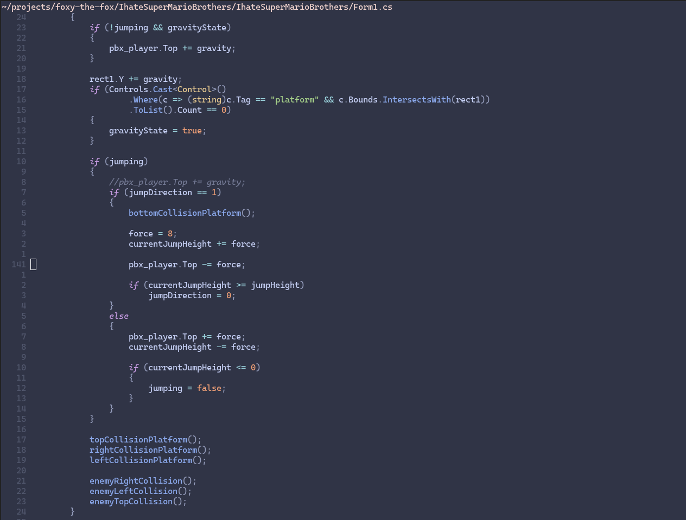
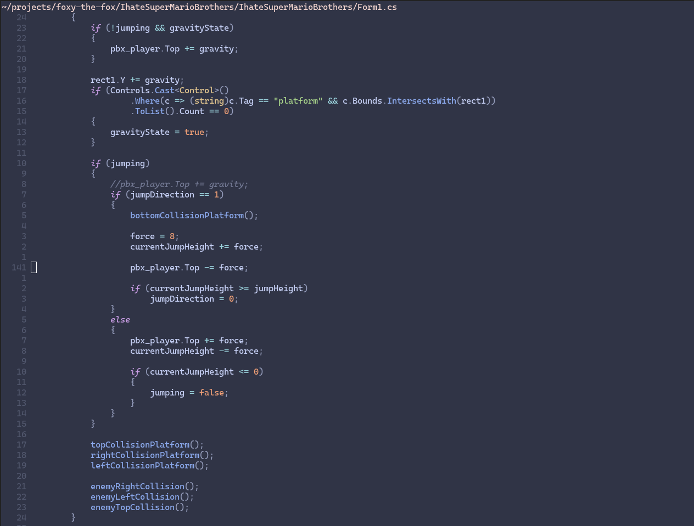

About me
I am a passionate Linux and web developer who wants to learn new things every day of my life. I am looking for work to learn as much as possible.
On this page, you will find my portfolio and contact information. This was done in an effort to show my work to the wider industry and others. Hopefully, I can prove that I can build the solutions that your company and clients require!


 
